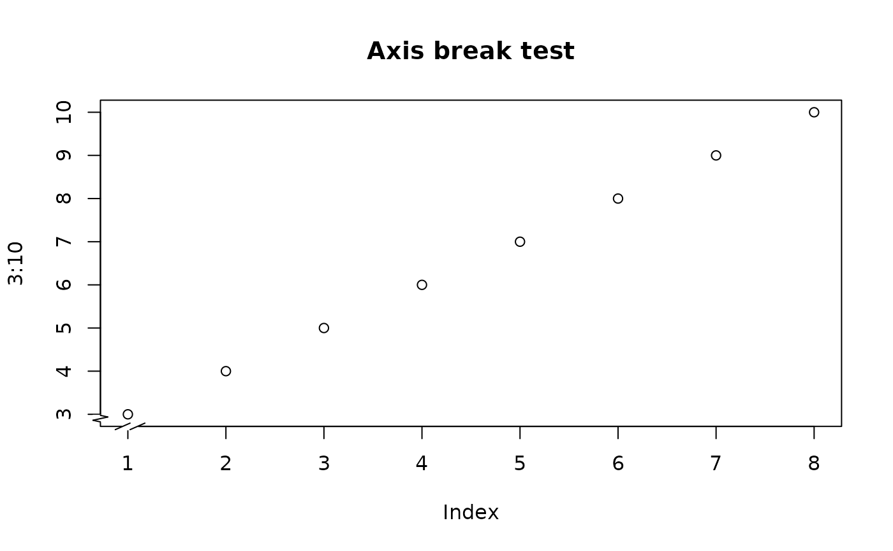

AxisBreak.RdPlaces a break mark on an axis on an existing plot.
AxisBreak(axis = 1, breakpos = NULL, pos = NA, bgcol = "white", breakcol = "black", style = "slash", brw = 0.02)
| axis | which axis to break. |
|---|---|
| breakpos | where to place the break in user units. |
| pos | position of the axis (see axis). |
| bgcol | the color of the plot background. |
| breakcol | the color of the "break" marker. |
| style | Either gap, slash or zigzag. |
| brw | break width relative to plot width. |
The pos argument is not needed unless the user has specified a different position from the default for the axis to be broken.
There is some controversy about the propriety of using discontinuous
coordinates for plotting, and thus axis breaks. Discontinuous coordinates
allow widely separated groups of values or outliers to appear without
devoting too much of the plot to empty space.
The major objection seems
to be that the reader will be misled by assuming continuous coordinates.
The gap style that clearly separates the two sections of the plot
is probably best for avoiding this.
Jim Lemon and Ben Bolker
# put a break at the default axis and position AxisBreak()AxisBreak(2, 2.9, style="zigzag")